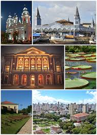

Cidade de Belém do Pará
Belém é um município brasileiro e capital do estado do Pará, situado na região Norte do país, fundado em 12 de janeiro de 1616 pelos portugueses, às margens da baía Guajará.

características
História
É uma cidade histórica e portuária, localizada na Amazônia Oriental, ao extremo nordeste da maior floresta tropical do mundo, sendo a capital mais chuvosa do Brasil devido a seu clima equatorial, influenciada diretamente pela Amazônia.
Em seus 400 anos de história, Belém vivenciou momentos de plenitude, entre os quais o período áureo da borracha, no início do século XX, quando recebeu inúmeras famílias europeias, que influenciaram a arquitetura local, sendo conhecida na época como Paris n'América.
Área
Belém possui uma área de 1 059,458 km² e uma altitude de dez metros ao nível médio do mar, estando a cerca de 2 140 km da capital federal, Brasília.